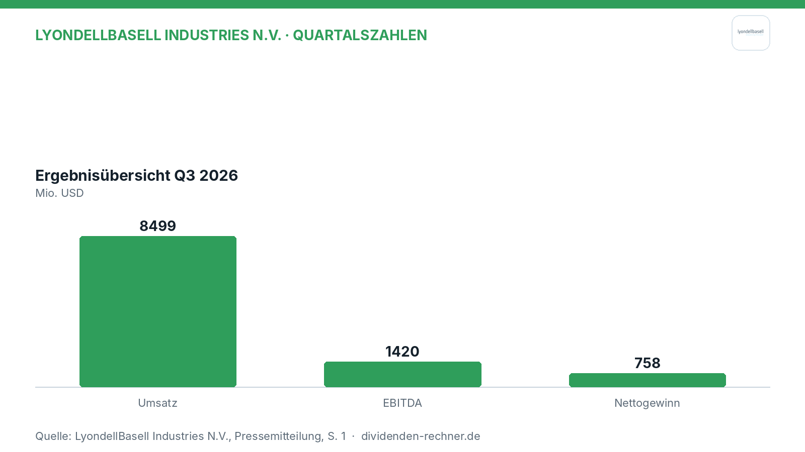
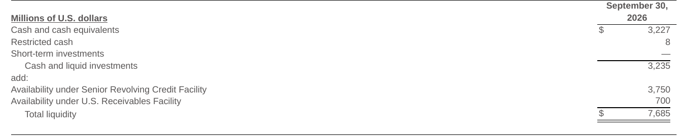

Quartalszahlen

LyondellBasell verdient im Quartal 758 Millionen US-Dollar
LyondellBasell legt die Zahlen für das dritte Quartal 2026 vor. Der Umsatz beläuft sich auf 8,5 Mrd. USD, der Nettogewinn liegt bei 758 Mio. USD.

Kurz gesagt
Umsatz: 8,5 Mrd. USD (−9,0 %)
Gewinn: 758 Mio. USD
- Zahlen: Der Nettogewinn erholt sich im Vergleich zum Vorjahresquartal stark, während der Umsatz leicht nachgibt.
- Ursache: Höhere Auslastungen bei Oxyfuels und ein starkes Geschäft bei Intermediates und Derivatives stützen das Ergebnis.
- Knackpunkt: Sinkende Preise in der klassischen Kunststoffssparte und geopolitische Unwägbarkeiten belasten das Marktumfeld.
Gewinn zieht an: LyondellBasell profitiert von oxyfuels und stabilen Kosten
Der Chemiekonzern LyondellBasell hat im dritten Quartal 8,5 Mrd. USD umgesetzt und damit an die Vorquartale angeknüpft. Unter dem Strich stand ein Nettogewinn von 758 Mio. USD, womit das Unternehmen das negative Ergebnis aus dem Vorjahreszeitraum hinter sich lässt. Die bereinigte Marge zeigt sich in einem anspruchsvollen Umfeld robust.

Eigene Darstellung nach Daten aus: LyondellBasell Industries N.V., Quartalszahlen vom 2026-10-30 · Original.Starkes Geschäft mit Derivaten und Oxyfuels
Im abgelaufenen Jahresviertel lief das Segment für Zwischenprodukte und Derivate deutlich besser. Das Unternehmen profitierte von einer höheren Auslastung der Anlagen und guten Margen bei Kraftstoffzusätzen, sogenannten Oxyfuels. Auch die geplante Wartung am Standort Clinton wurde termingerecht und unter dem Budget abgeschlossen. Belastend wirkten dagegen niedrigere Preise für Polymere in Amerika und Europa. Das Management steuert mit dem Cash Improvement Plan gegen, um die internen Fixkosten zu senken.
„Wir nutzen die Flexibilität und Widerstandsfähigkeit unserer schlankeren Struktur, indem wir Rohstoffe optimieren und Produkte gezielt in wachstumsstarke Märkte lenken“
— Peter Vanacker, Vorstandschef (aus dem Englischen übersetzt)
Dividende und verlässliche Ausschüttungen
Für Aktionäre bleibt die Verlässlichkeit der Auszahlung ein zentraler Punkt. Im abgelaufenen Quartal flossen 224 Mio. USD über Dividenden an die Anteilseigner zurück, während parallel Investitionen in Höhe von 303 Mio. USD getätigt wurden.
Solide Liquidität und disziplinierte Schuldenreduktion
Die Finanzbasis des Konzerns ist gut gepolzert. Zum Quartalsende verfügte das Unternehmen über liquide Mittel von 3,2 Mrd. USD und eine Gesamtkapitalverfügbarkeit von 7,7 Mrd. USD, wie die Aufstellung unten zeigt.

Liquidität und Barmittel. Quelle: LyondellBasell Industries N.V., Quartalszahlen vom 2026-10-30 · Original. Ausschnitt nur zugeschnitten, sonst unverändert.Die Nettoverschuldung wurde im Laufe der Periode unter anderem durch die planmäßige Rückzahlung einer Anleihe über 500 Mio. € verringert, was die Bilanzstruktur stärkt.
Ausblick und konjunkturelle Risiken
Für den kommenden Jahresabschnitt rechnet das Management mit saisonal normalem Nachfrageverhalten und stabilen operativen Raten. Gleichzeitig dämpfen globale Lieferkettenrisiken und geopolitische Spannungen im Nahen Osten die Aussichten. Das Unternehmen setzt weiter auf strikte Kostendisziplin und eine flexible Auslastung der Werke.
Kurs und Marktstellung in volatilen Märkten
Im Branchenvergleich positioniert sich LyondellBasell durch eine breite Diversifikation und kostenoptimierte Portfolios. Während klassische Polyolefine unter Preisdruck leiden, gleichen spezialisierte Produktlinien dies aus. Die solide Liquiditätsposition gibt dem Konzern den nötigen Spielraum, um auf zyklische Schwankungen zu reagieren und Investitionen in nachhaltige Lösungen abzusichern.
Quelle: LyondellBasell Industries N.V., Quartalszahlen vom 2026-10-30. Rechenwege eigene Berechnung. Keine Anlageberatung.
Hinweis: Dieser Text dient der allgemeinen Information und ist weder Anlage-, Steuer- noch Rechtsberatung. Kapitalanlagen sind mit Risiken verbunden, bis hin zum Totalverlust.